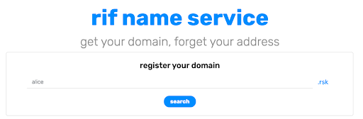
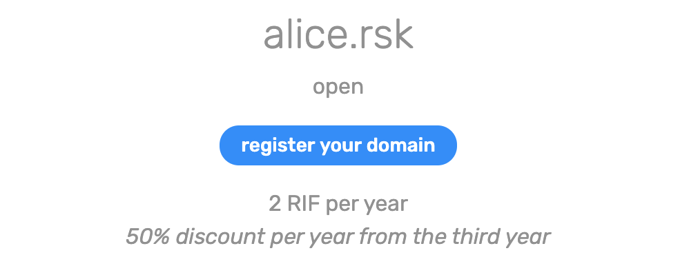
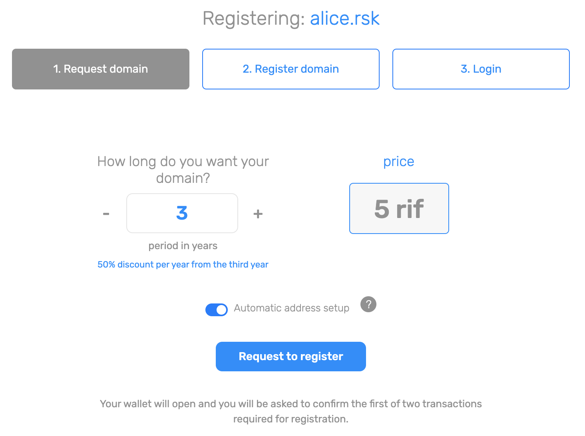
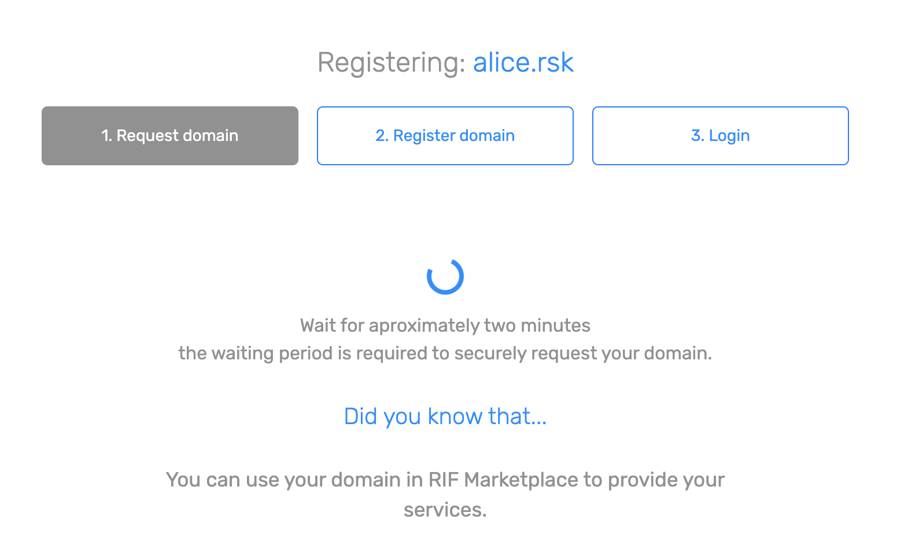
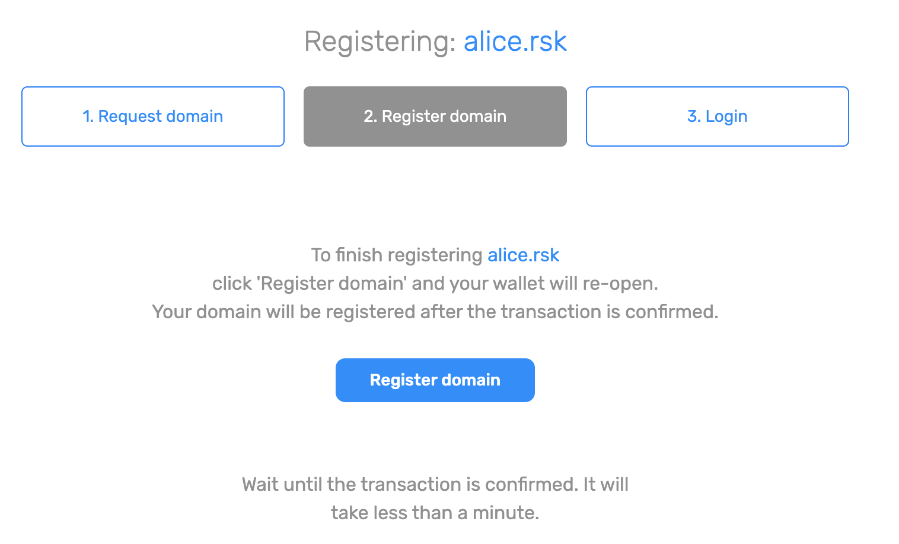
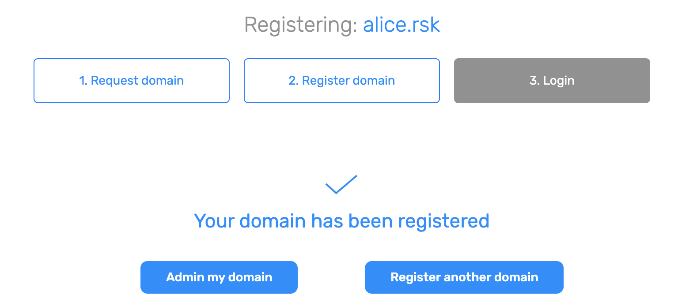
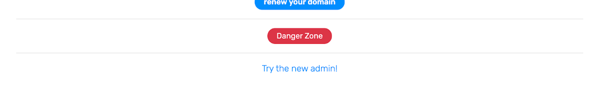

RIF 域名服务 (RNS) 是允许用户拥有任意区块链中可读域的去中心化服务。换句话说，RNS 是区块链中的电话簿。人们能够通过网域名称取得线上资讯，像是 alice.rsk
或bob.rsk。钱包使用地址通过区块链协议相互影响。RNS 将域名转换成地址，以便用户可以使用这些域名来进行汇款并与去中心化应用程序進行交互。
让我们假设您要向 Alice 发送一些 RIF 代币。您可能首先要打开您的钱包，然后询问 Alice 她的地址。
0xfDB628524AD95c95a2C1f8dA9b8Bd92b6478CF6F
当您按下发送按键时，钱包将使用您输入的地址并标记一笔汇款到该地址的交易。
但是，这不是汇款的唯一选择！Alice 已经注册了她的域，因此她只需在您的钱包输入她的域，即可立即汇款。
alice.rsk
钱包使用 RNS 来取得域的地址，然后在 RNS 公共电话簿中进行搜寻。取得地址后，您将会使用汇款收款人签署交易。
您可以利用 RNS 管理员来注册域名。您将需要：
有了这些就一切就绪。来注册域名吧！






我们可以使用 RSK 测试网网络来试用 RNS 服务。若要这么做，请连结您的浏览器钱包到 RSK 测试网（切换 Nifty 中的网络，或 参阅如何在 Metamask 中进行）。然后在水龙头中获取款项：
我们目前正在重新全面设计我们的平台。如果想要尝试所有最近的更新，请点击管理页面底部的“try the new admin!”（尝试新的管理！）。

我们正在尽力完成许多其他惊人的项目。我们正在积极开发 JavaScript 资料库，让去中心化应用程序和钱包的交互更快更有效。 尝试开源 RNS javascript 资料库!